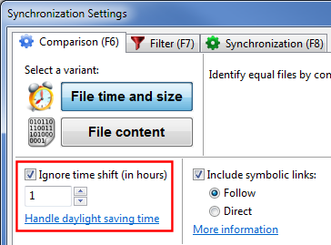

A common problem synchronization software has to handle are +-1 hour file time shifts after a Daylight Saving Time (DST) switch has occurred. This can be observed for example when a FAT-formatted volume is compared against an NTFS volume, like when synchronizing a local disk against a USB memory stick. Files that previously appeared to be in sync are now shown with an one hour modification time offset, although they have not been modified by the user or the operating system.
The reason for this behavior lies in the way NTFS and FAT drives store file times: NTFS stores time in UTC format, while FAT uses local time.
When times of these two different formats are compared, one format has to be converted into the other first. In either way Windows uses the current DST status as well as the current time zone for its calculations. Consequently the result of this comparison is dependent from current system settings with the effect that file times that used to be the same show up as different after a DST switch or when the time zone has changed.
For a detailed discussion about this issue see: http://www.codeproject.com/KB/datetime/dstbugs.aspx
In FreeFileSync's comparison settings you can enter a full-hour time shift to ignore during comparison: If you need to handle differences due to daylight saving time enter a one hour shift. If the differences are caused by changing the time zone enter a larger shift as needed.
